Tecnologías de observación espacial

La tecnología de los telescopios espaciales ha revolucionado la exploración del universo, permitiendo observar más allá de nuestro sistema solar con gran precisión. Gracias a los telescopios espaciales como Hubble, Kepler y James Webb, la comunidad científica hoy puede estudiar características de exoplanetas que antes eran imposibles de detectar.
Estos avances han permitido pasar del simple hallazgo de nuevos mundos a comprender cómo son, cómo se forman y si algunos podrían presentar condiciones favorables para la vida.
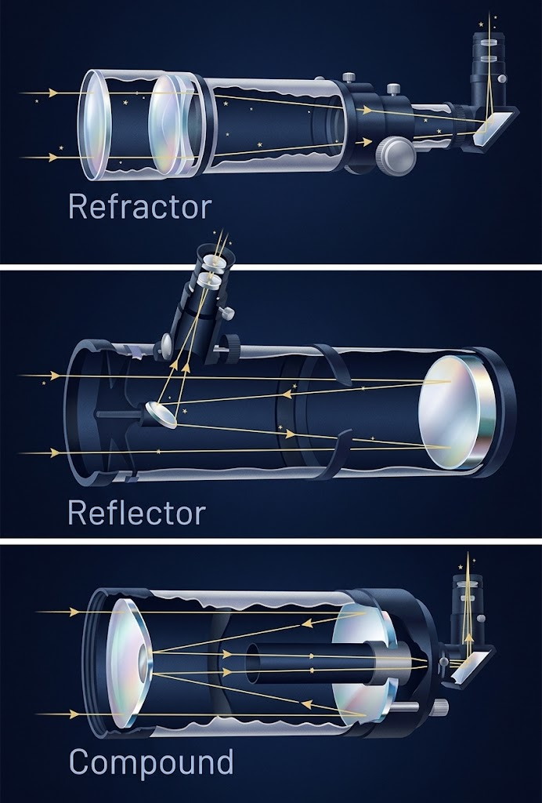
Explicar los avances tecnológicos en los telescopios espaciales (Hubble, Kepler y James Webb), analizando cómo sus herramientas de observación han impulsado la búsqueda e identificación de exoplanetas con posibilidades de vida.
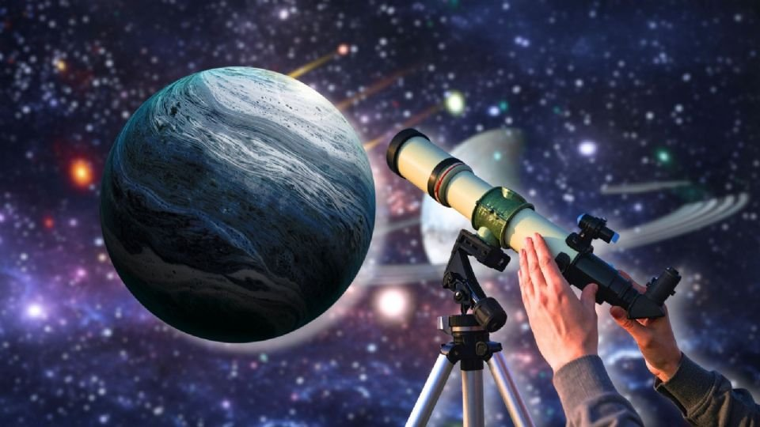
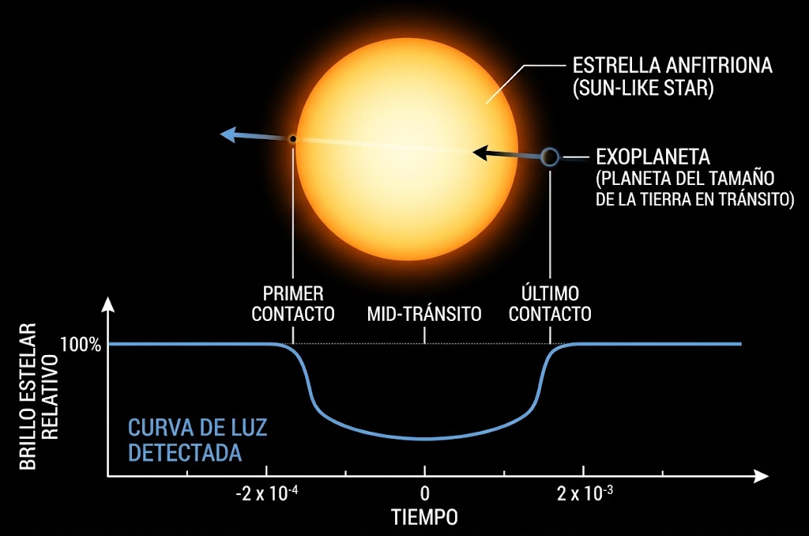
La atmósfera terrestre refracta y dispersa la luz estelar, distorsionando las imágenes e impidiendo medir variaciones mínimas de brillo en mundos lejanos.
Observar desde el espacio garantiza imágenes de alta resolución y permite escanear atmósferas exoplanetarias en longitudes de onda inaccesibles desde la Tierra.
La atmósfera absorbe gran parte de la radiación infrarroja y ultravioleta, donde se encuentran las huellas químicas clave de los gases planetarios.
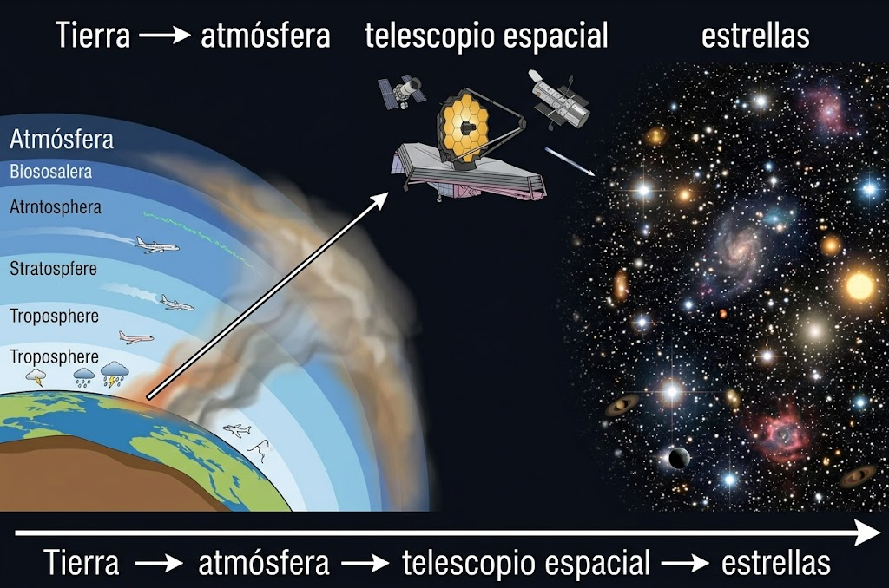
Ocurre cuando un exoplaneta cruza directamente frente a su estrella anfitriona, bloqueando una pequeña fracción de su luz.
Mide la caída de brillo estelar. Su profundidad indica el tamaño del planeta y la frecuencia su período orbital.
Identificar el período orbital permite calcular la distancia del planeta a su estrella, paso indispensable para determinar su temperatura.
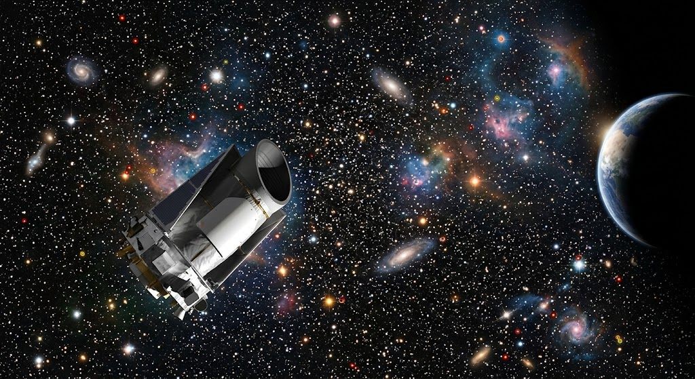
Cuanto más grande sea el planeta respecto a su estrella, más luz bloqueará cuando pase delante de ella.
Estimar el tamaño de un exoplaneta observando cuanto disminuye el brillo de su estrella durante el tránsito.
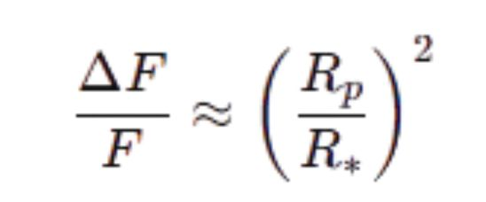
Franja de distancia orbital donde la radiación de la estrella permite mantener agua en estado líquido sobre la superficie.
Análisis del filtrado de la luz estelar a través de la atmósfera del exoplaneta para identificar sus compuestos químicos.
Identificación directa de moléculas clave como agua (H₂O), dióxido de carbono (CO₂), metano (CH₄) y ozono (O₃).
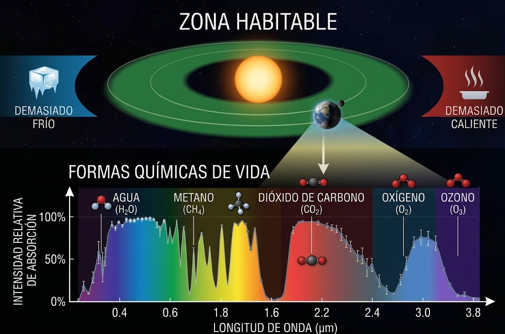
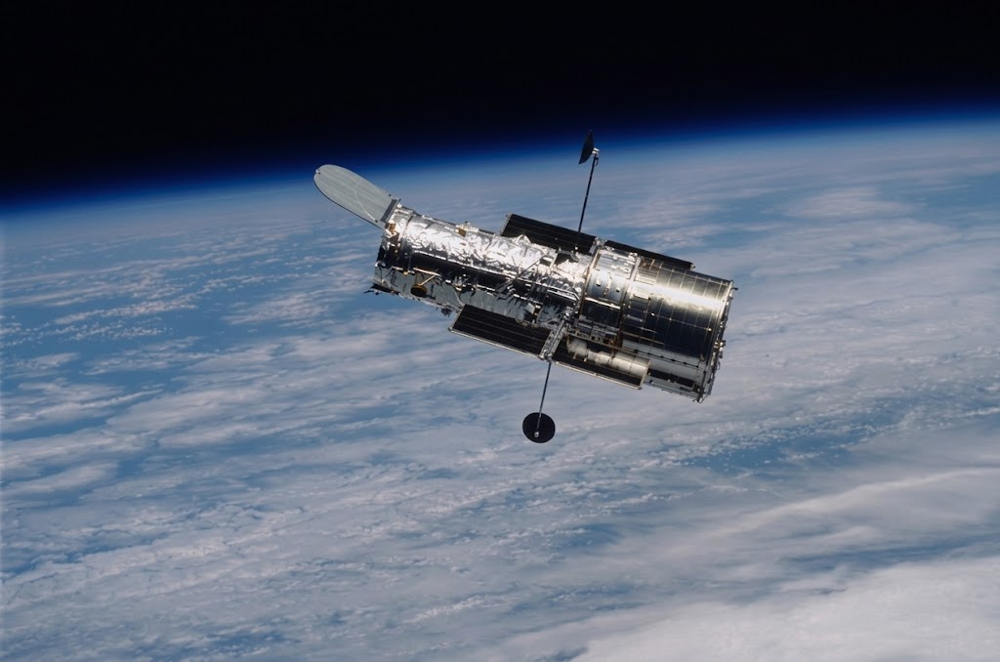
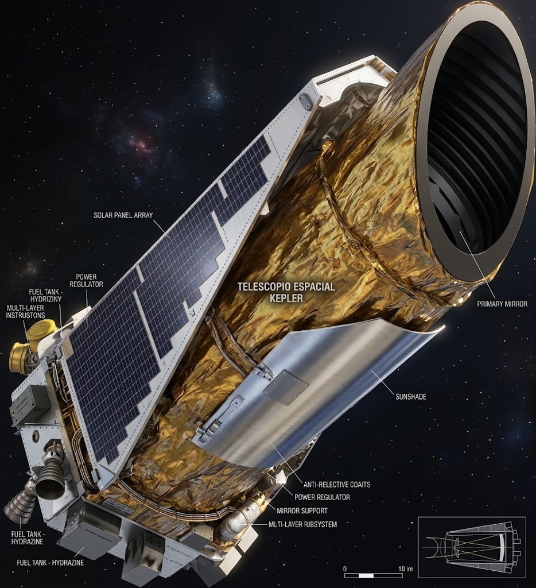
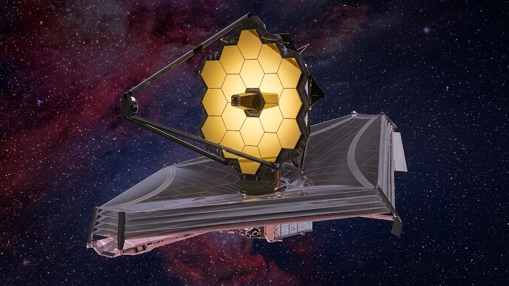
La capacidad de un telescopio para distinguir detalles pequeños en objetos muy lejanos.
Nos permite conocer la capacidad de un telescopio para distinguir detalles pequeños en objetos lejanos.
Espejo más grande = distingue detalles más pequeños.
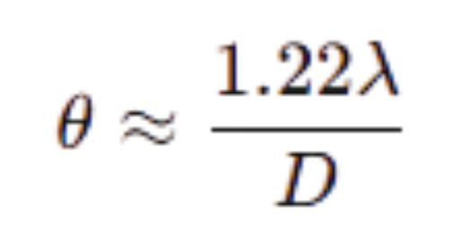
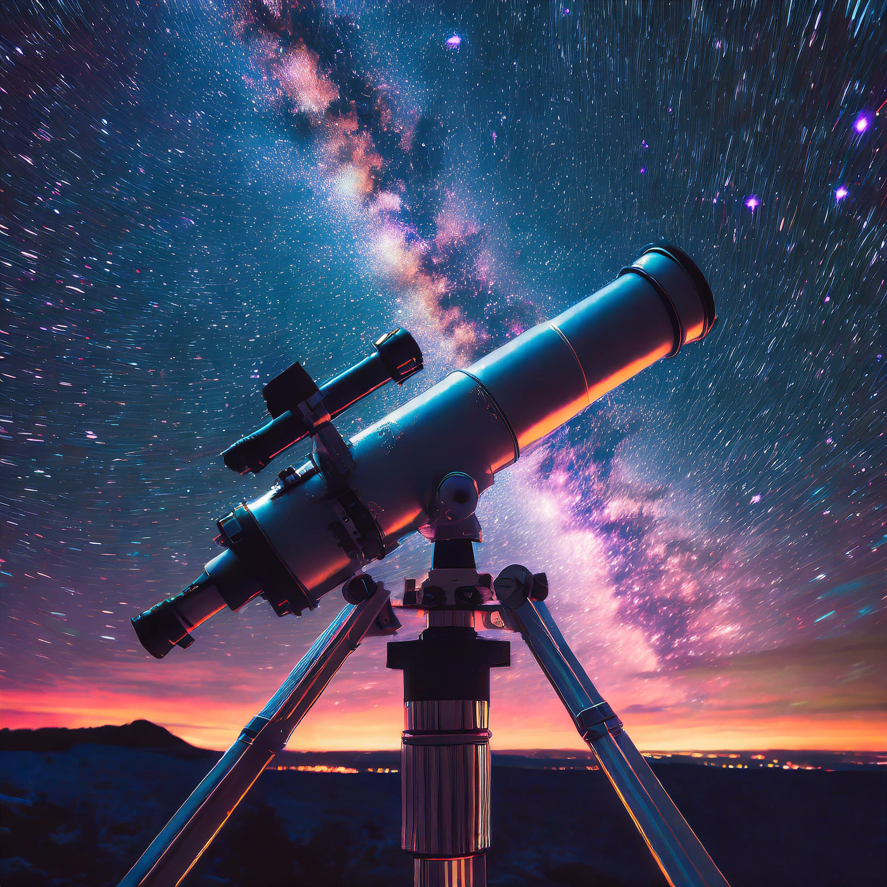
Seleccionar un exoplaneta que presente características potencialmente habitables y estudiar la viabilidad de una futura visión humana.
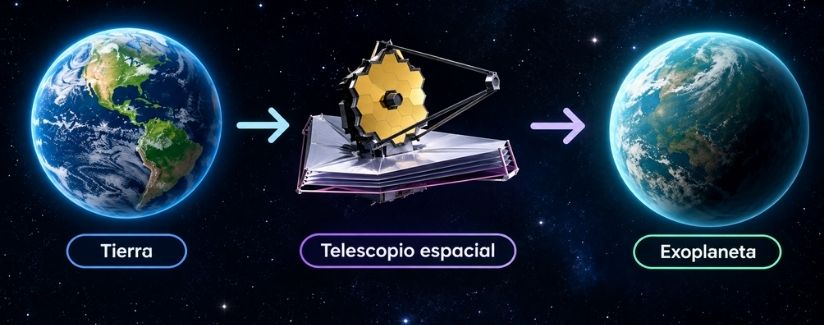
Qué encuentra el visitante.
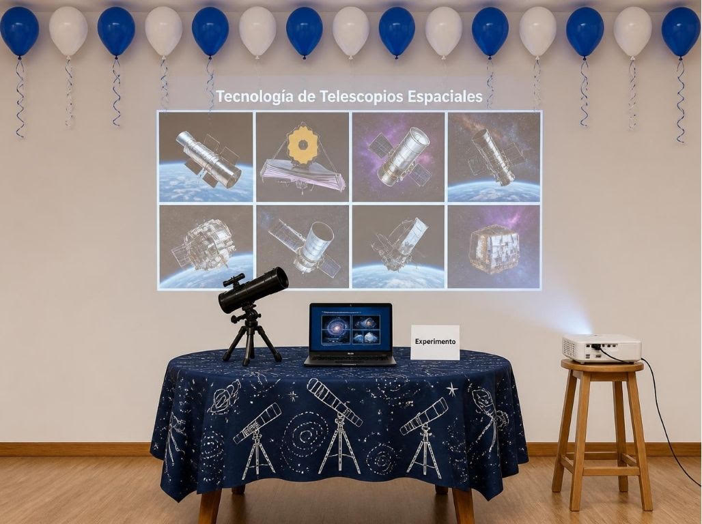
Explora la simulación espacial. Arrastra para rotar la vista, usa los controles inferiores para cambiar de objetivo enfocado, ajustar el zoom óptico o desplegar la retícula en pantalla.
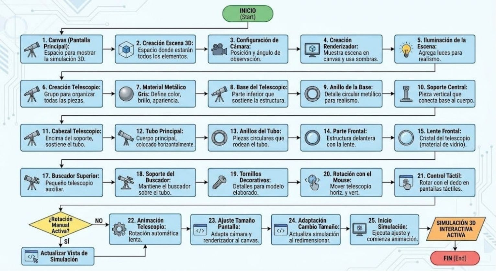
La propuesta permite la evidencia de los principios de funcionamiento de la técnica de telescopios para la observación astrológica y la especificación de exoplanetas, combinado con el uso de simulaciones interactivas en tiempo real para permitir la representación de instrumentos espaciales y ópticos
Los telescopios espaciales recogen la luz de estrellas distantes, prestando atención a las variaciones que se producen en su brillo o en su trayectoria. Cuando un planeta extra-solar (es decir, un planeta que orbita una estrella lejana, distinta a la del sistema solar) pasa frente a su estrella (método del tránsito), bloquea una cierta atención de la luz que esta emite. Con el fin de recolectar este tipo de eventos mínimos, se hace necesaria la utilización de unos instrumentos con estructuras ópticas complejas (espejos, lentes, tubos de aislamiento y sensores de alta precisión) que deben estar orientadas de una forma extremadamente precisa en el espacio. Un aspecto de la Simulación Digital 3D de que se nos ofrece; la simulación es la proyección en el lienzo (Canvas) del modelo tridimensional del telescopio, lo que permite explorar cada uno de los elementos mecánicos que lo componen: tubo, soporte, lentes, ocular y buscador, así como observar de qué forma viaja la luz a través del sistema óptico, lo que permite llegar a observar las estrellas con la mayor precisión posible, sin interferencia de la atmósfera terrestre.
La propuesta surge para poder hacer accesible y entendible la tecnología de los telescopios espaciales y la detección de los exoplanetas. Dado que no es posible realizar acciones con un auténtico telescopio espacial en la Feria Científica, esta simulación 3D interactiva, si se quiere, sirve como recurso didáctico que permite al público y al jurado poder manipular, explorar y entender la estructura tecnológica de los instrumentos astronómicos que hacen posible la detección de nuevos mundos fuera del sistema solar.
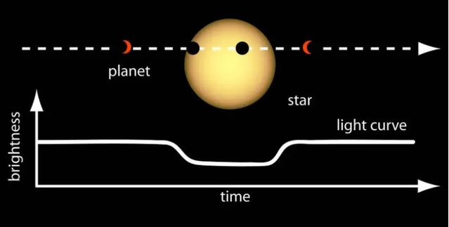